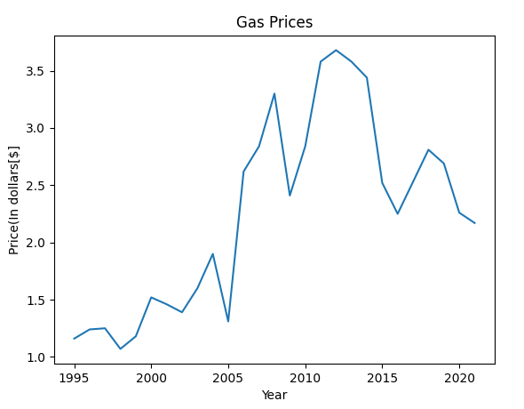

What does the project do?
This project examines a dataset containing data of gas prices in America and displays it on a graph to clearly show the data.

What does the project not do?
This project does not predict future gas prices or look at different types of gas, it only examines standard gas prices from 1995 to 2021
What are the limitations of the project?
There was a too much data in the original datapack so I had to trim it down.
The original datapack had the prices from each month in the year so i got the average of all of the months for each year and then just had the average price displayed for each year.
The original datapack can be found here along with the trimmed one:
Original
Edited
Any Ethical Problems?
There are no ethical issues as this is purely a statistical analysis
Who are the end users of the project?
The end users of this project are anyone who is interested in looking at how the economy has changed from 1955 to now
Conclusion
My hypothisis was correct to a degree. Gas prices did rise from 2000 (although not steadily) but around 2014 they began declineing